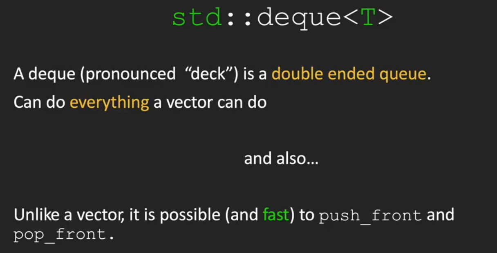

CS106l¶
写在前面的话¶
首先是课程网址，cs106l
其次是cpp.reference网站 记得挂梯子哦
lecture1：beginning¶
for the std¶
std and < bits/stdc++.h > the CSDN web is here,click this
Find the sum of a vector¶
//version 1
vector<int> vec ={1,2,3};
int sum =0;
for(auto val :vec){
sum +=val;
}
//version 2
vector<int> vec={1,2,3};
int sum=0;
for(const auto&val :vec){
sum +=val;
}
//version 3
vector<int> vec={1,2,3};
int sum= std::accummulate(vec.begin(),vec.end(),0);
Hello world!¶
#include<iostream>
int hello_cpp(){
std::cout<<"hello world!"<<std::endl;
}
#include<stdio.h>
#include<stdlib.h>
int hello_c(){
printf("%s","hello world!");
}
//two versions are equal
lecture 2¶
string¶
int main(){
string str="Hello world!";
cout::str::endl;//print the string
cout::str[1]::endl;//print "e"
str[1]='i';//change the char
}
stream¶
输出流
int main(){
ostringstream oss("Ito-En Green Tea");
cout << oss.str()<< endl;//Tto-En Green Tea;
oss << "16,9 Ounces";//16.9 Ouncesn Tea
//这个流是从左开始做buffer进行替换的
ostringstream oss("Ito-En Green Tea",ostringstream::ate);
cout << oss.str()<< endl;//Tto-En Green Tea;
oss << "16,9 Ounces";//
//这个流是从右开始做buffer进行替换的
isstringstream iss("16.9 Ounces");
double amount;
string unit;
iss >> amount;//amount get 16.9 as a double
iss >> unit;
cout << amount/2 << endl; //8.45?
isstringstream iss("16.9 Ounces");
int amount;
string unit;
iss >> amount;
iss >> unit;//this two lines can be combined as iss >> amount >> unit
cout << amount/2 << " " << unit << endl; //8 .9
//一个指针从头开始往右移动，first stop at 6,and amount gets 16, then a bubble, then unit gets .9,so the result outputs 8 .9
}
string to integer
int stringToInteger(const string& s){
istringstream iss(s);
int result;
iss >> result;
return result;
}
we can use manipulators to pad the output.
cout << "[" << setw(10) << "Ito" << "]";
//output:[ Ito]
cout << "[" << left << setw(10) << "Ito" << "]";
//output:[Ito ]
cout << "[" << left << setfill('-') << setw(10) << "Ito" << "]";
//output:[Ito----------]
lecture 3: type and advanced streams¶
cin and cout¶
int getInteger(const string& prompt){
string line;
getline(cin,line);
istringstream iss(line);
int val;
iss >> val;
}
auto¶
automatically help you be lazy
auto prices = make_pair(3.4,5); //pair<double,int>
auto values = make_tuple(3,4,"hi"); //tuple<int,int,char*>
prices.first = prices.second; //prices = {5.0,5};
get<0>(values) = get<1>(values); //values = {4,4,"hi"};
auto [a,b] = prices; //a,b are copies of 5.0 and 5;
const auto& [x,y,z]=values; //x,y,z are const references to the 4,4, and "hi";
lecture 4: sequence container¶
review the structure first
struct PriceRange{
int min;
int max;
}
struct Course{
string code;
Time startTime;
Time endTime;
vector<string>instructors;
}
initialization
caution:Use Thoughtfully When should I use a stringstream? 1. Proccessing strings 1. simplify "/./a/b/.."to"/a" 2. Formatting input/output 1. ippercase,hex,and other stream manipulators 3. Parsing different types 1. stringToLinteger() from previous lectures
STL库¶
example of the bubble sort the usual type is here:
int main(){
vector<int> vec(20);
for(size_t i=0;i< vec.size(); i++){
vec[i]=rand();
}
doBubbleSort(vec);
for(size_t i=0;i<vec.size();i++){
cout << vec[i] << endl;
}
}
void doBubbleSort(vector<int> &v){
for(size_t i=0;i<v.size()-1;i++){
for(size_t j=0;j<size(()-i-1;j++){
if(v[j]>v[j+1]){
int temp =v[j];
v[j]=v[j+1];
v[j+1]=tmp;
}
}
}
}
the STL type is here:
int main(){
vector<int> vec(20);
std::generate(vec.begin(),vec.end(),rand);
std::sort(vec.begin(),vec.end());
std::copy(vec.begin(),vec.end(),std::ostream_iterator<int>(cout,"\n"));
}
sequence container¶
provides access to sequences of elements includes: std::vector < T > std::dequet < T > std::list < T > std::array < T > std::forward_list < T >
std::vector< T >¶
a vector represents a sequence of elements of any type.You specify the type when using the vector:
std::vector< int > vecInt;//vector of ints
std::vector< string > vecStr;//vector of string
std::vector< mystruct > vecStruct;//vector of mystructs
std::vector< std::vector< string > > vecOfVec // vector of vector<string>
summary of Stanford vector< t > vs std::vector< T >

std::deque< T >¶
cpp reference explain deque ,click here
#include <deque>
#include <iostream>
int main()
{
// Create a deque containing integers
std::deque<int> d = {7, 5, 16, 8};
// Add an integer to the beginning and end of the deque
d.push_front(13);
d.push_back(25);
// Iterate and print values of deque
for (int n : d)
std::cout << n << ' ';
std::cout << '\n';
}
vector is the type of sequence that should be used by default...deque is the data structrue of choice when most insertions and deletions take place at the beginning or at the end of sequence. 
in general,a graph could tell the difference between the vector and the deque

the stack and the queue¶
 so the stack and the queue are just a special case of the vector and the deque.
so the stack and the queue are just a special case of the vector and the deque.
lecture5: Associative Container¶
have no idea of a sequence. data is accessed using the key instead of indexes. includes:
map/set:Keys in sorted order,faster to iterate through a range of elements.Unordered map/set:faster to access individual elements by key.